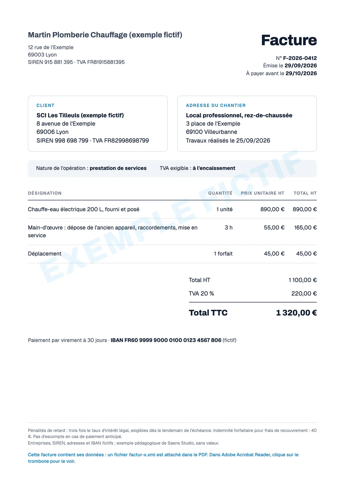

Ressource gratuite · en accès libre
La facture électronique, sans le jargon
Ce qui change vraiment, ce que tu dois faire selon ton cas, et un agent prêt à installer pour que ta facturation tourne toute seule.
Guillaume Prat · Saens Studio, Lyon · vérifié le 29/09/2026 sur impots.gouv.fr, service-public.gouv.fr et economie.gouv.fr
Ce qui change
La loi change peu ta facture : quelques mentions en plus, et surtout son chemin.
- 1La forme. Un fichier qui contient ses données (ton SIREN, celui du client, les montants, la TVA, l'échéance), le plus souvent un PDF. Le logiciel de ton client la lit sans rien retaper. Un PDF fait sur Word ne compte plus comme facture électronique.
- 2Le chemin. Fini le mail : elle passe par une plateforme agréée par l'État, souvent celle de ta banque ou de ton logiciel de facture.
- 3Les dates. Recevoir : obligatoire depuis le 1er septembre 2026, pour toutes les entreprises, micro comprises. Envoyer à tes clients pros : le 1er septembre 2027 pour les artisans, les TPE et les PME. Aucune sanction en 2026, mais ce n'est pas un report. Ensuite, jusqu'à 50 € d'amende par facture hors format, plafonnés à 15 000 € par an.
Ton devis, lui, ne bouge pas. Il reste un devis classique. Il reste 337 jours avant le 1er septembre 2027.
Une vraie facture électronique, annotée
Elle est fictive, mais conforme. Ouvre-la : elle ressemble à une facture d'aujourd'hui. Voici ce qui change.

1234- 1Le SIREN de ton client. Nouveau et obligatoire : c'est lui qui permet de trouver la plateforme de ton client.
- 2L'adresse de livraison, ici le chantier, quand elle diffère de l'adresse du client.
- 3La nature de ce que tu factures : des biens, des services, ou les deux.
- 4Les données attachées. Un fichier lisible par une machine est glissé dans le PDF : le logiciel de ton client lit tout, sans rien retaper.
Une dernière mention, « Option pour le paiement de la taxe d'après les débits », n'apparaît que si tu as choisi cette option : ce n'est pas le cas ici. Tout le reste ne bouge pas : ton nom, tes lignes, tes prix, tes mentions habituelles. Pour les artisans et les TPE, ces mentions deviennent obligatoires le 1er septembre 2027.
Télécharger la facture d'exemple ↓Voir ses données, comme les lit la machineVoir ↓Replier ↑
- Numéro
- F-2026-0412
- Vendeur
- SIREN 915881395
- Client
- SIREN 998698799
- Nature
- S1 · services
- Livraison
- 69100 Villeurbanne
- Total HT
- 1100.00
- TVA
- 20 % · 220.00
- Total TTC
- 1320.00
- Échéance
- 2026-10-29
- Paiement
- virement · IBAN
Dans Adobe Acrobat Reader, clique sur le trombone : le fichier factur-x.xml est là. Contrôlée avec Mustang, un validateur libre : données conformes à la norme européenne EN 16931, PDF au format d'archivage PDF/A-3. Entreprises, SIREN et IBAN fictifs.
Ton cas
Ce qui décide, ce n'est pas ton métier : c'est à qui tu vends.
| Tu es | Recevoir | Envoyer |
|---|---|---|
| Micro-entrepreneur, même sans TVA | Oui, déjà | Oui, en septembre 2027, pour tes clients pros. Ta mention « TVA non applicable, article 293 B du CGI » reste. |
| Artisan ou TPE qui travaille pour des pros | Oui, déjà | Oui, en septembre 2027. C'est toi que la réforme vise le plus. |
| Artisan qui travaille pour des particuliers | Oui, déjà : les factures de tes fournisseurs | Pas de facture électronique pour un particulier. À partir de septembre 2027, ta plateforme transmet aux impôts ton chiffre d'affaires de chaque jour ; ton logiciel s'en charge s'il est raccordé. |
| Client public (mairie, État, hôpital) | Tu continues sur Chorus Pro. À partir de septembre 2027, tu pourras aussi passer par ta plateforme. Les factures de marchés publics de travaux restent sur Chorus Pro. | |
Ton cas est plus compliqué, ou tu veux qu'on le regarde ensemble ? Écris-moi →
Cette semaine : quatre vérifications
Une demi-heure, et tu n'es plus pris de court. Clique sur une ligne pour la cocher.
- Regarde si tu es déjà inscrit. Sur l'annuaire officiel, recopie le code, tape ton SIREN : « Plateforme agréée rattachée : Oui » et une adresse active « Oui », tu es prêt. ouvrir l'annuaire officiel →
- Sinon, choisis ta plateforme, en commençant par ta banque. Qonto et Shine sont elles-mêmes agréées ; le Crédit Agricole passe par sa filiale Kolecto, la Banque Populaire par iPaidThat (gratuit jusqu'à 20 factures par mois). Outils gratuits aussi : Indy, Tiime, Abby, Dougs, Pennylane pour les micro, et celui de ta chambre de métiers. Dans le bâtiment : Obat, Batappli, EBP Bâtiment, Sage Batigest, Evoliz. La liste officielle fait foi.
- Récupère le SIREN de chacun de tes clients pros. Il devient obligatoire sur ta facture. Il se trouve gratuitement sur l'Annuaire des entreprises. Sinon, une fois l'agent installé (plus bas), dis-lui « Complète mes clients » : il les récupère tous.
- Méfie-toi des démarcheurs. Les impôts ne te demandent jamais de payer ni de donner tes codes par mail, SMS ou téléphone. En cas de doute : ton espace sur impots.gouv.fr, ou la ligne officielle, 0806 807 807.
Vérifie que ta facturation est déjà dans le bon système
Une fois ton IA branchée sur ta messagerie et ta banque ou ton logiciel (étapes 1 et 2 plus bas), donne-lui cette consigne : elle passe tes dernières factures en revue.
Regarde les cinq dernières factures que j'ai envoyées à des clients professionnels (dans ma banque ou mon logiciel de facture, et dans ma messagerie). Pour chacune, dis-moi : 1. comment elle est partie : par une plateforme agréée, ou en simple PDF par mail ; 2. si elle porte déjà les nouvelles mentions : le SIREN du client, l'adresse de livraison si elle diffère, la nature de l'opération (biens, services ou les deux) ; 3. ce qui manque pour qu'elle soit conforme au 1er septembre 2027. Termine par la liste de ce que je dois changer, du plus simple au plus long. Si tu ne peux pas savoir quelque chose, dis-le au lieu de supposer.
L'agent facturation : ta facturation qui tourne toute seule
Un agent, c'est ton IA branchée sur tes outils, avec une consigne qu'elle garde et applique toute seule. Tu l'installes une fois, en trois étapes. Ensuite, une phrase suffit.
1 · Branche ta messagerie
2 · Branche ta banque ou ton logiciel de facture
- Qonto : connecteur officiel, dans la même liste. Ton IA crée tes clients, tes devis et tes factures, et peut envoyer une facture électronique. Aucun virement ne part sans toi.
- Pennylane : connecteur personnalisé
https://mcp.pennylane.com/mcp, en lecture seule (offre Essentiel ou plus). Ton IA lit, prépare, et tu saisis. - Autre banque ou logiciel : s'il a une API (Sellsy, Axonaut, Evoliz en ont une), on la branche une fois, c'est technique. Sinon, ton IA prépare tout dans ta messagerie et ton Drive, et tu recopies dans ton outil.
Je veux te brancher sur [nom de ma banque ou de mon logiciel de facture]. Cherche s'il existe : un connecteur officiel dans ta liste, un connecteur personnalisé (une adresse à coller), ou une API. Explique-moi pas à pas comment le brancher, ce que tu pourras y faire (lire, créer, envoyer), et ce que ça coûte. S'il n'existe rien, propose-moi la meilleure solution de repli pour que tu puisses quand même préparer mes devis et mes factures. Donne tes sources, et dis-moi quand tu n'es pas sûr.
3 · Installe l'agent
Colle la consigne d'installation, puis le texte de l'agent, dans la même conversation. Ton IA te pose ses questions, crée la compétence et fait un essai à blanc. Sur ChatGPT, colle l'agent dans les instructions d'un projet.
Voici mon agent de facturation, juste en dessous. Crée une compétence à partir de ce texte. Avant, vérifie que tu as bien accès à ma messagerie, à ma banque ou mon logiciel de facture, et à mon Drive, et dis-moi ce qui manque. Puis pose-moi une par une les questions nécessaires pour remplacer ce qui est entre crochets par mes vrais outils. Termine par un essai à blanc : prends mon dernier devis accepté et montre-moi la facture que tu préparerais, sans rien créer ni envoyer.
--- name: agent-facturation description: Mon agent de facturation : nouveaux clients, devis, factures, paiements, relances et envoi au comptable. À utiliser dès que je parle d'un nouveau client, d'un devis, d'une facture, d'un paiement, d'une relance ou de mon comptable. --- # Mon agent de facturation ## Mes outils - Messagerie : [Gmail ou Outlook]. C'est là qu'arrivent les demandes, les devis acceptés et les factures de mes fournisseurs. - Banque ou logiciel de facture : [Qonto, Pennylane ou autre]. C'est là que vivent mes clients, mes devis, mes factures et mes paiements. - Stockage : [Google Drive ou OneDrive], dossier « Factures ». - Données officielles d'une entreprise : l'Annuaire des entreprises (annuaire-entreprises.data.gouv.fr). ## Ce que je te dis, et ce que tu fais ### « Nouveau client : … » 1. Si c'est une entreprise, retrouve son SIREN et son adresse sur l'Annuaire des entreprises. Si c'est un particulier, demande-moi son adresse. 2. Crée sa fiche dans ma banque ou mon logiciel de facture. 3. Prépare le devis en brouillon à partir de mes trois devis les plus proches : mes prix, ma présentation, mes mentions habituelles. Note l'adresse du chantier si elle diffère, et s'il s'agit de biens, de services ou des deux. 4. Montre-moi le devis avant tout envoi. ### « Le devis … est accepté » 1. Crée la facture à partir du devis, sans rien retaper : SIREN du client, nature de l'opération, adresse de livraison si elle diffère, acomptes déjà facturés déduits. 2. Montre-moi la facture et dis-moi ce que tu n'as pas pu remplir. 3. Quand je réponds « envoie » : envoie-la en facture électronique si mon client peut la recevoir, sinon en PDF par mail, avec un message court dans mon ton. ### « Complète mes clients » 1. Liste mes clients professionnels dans ma banque ou mon logiciel de facture. 2. Pour chacun sans SIREN ou sans adresse, retrouve-les sur l'Annuaire des entreprises. 3. Montre-moi le tableau (client, SIREN trouvé, adresse, sûr ou à vérifier), puis complète les fiches quand je dis « vas-y ». ### « Le point du mois » 1. Liste les factures de mes fournisseurs reçues le mois dernier (dans ma banque et dans ma messagerie) et les factures que j'ai émises. 2. Range chaque fichier dans « Factures / [année-mois] / reçues » ou « émises », nommé « date · fournisseur ou client · montant ». 3. Rapproche chaque facture des mouvements de mon compte et signale celles qui ne sont pas payées. 4. Prépare en brouillon le mail à mon comptable, avec le lien du dossier et la liste. ### « Qui me doit de l'argent ? » (et chaque lundi matin) 1. Pour chaque virement reçu depuis la dernière fois, retrouve sa facture et marque-la payée. 2. Liste les factures en retard : client, montant, nombre de jours. 3. Prépare une relance en brouillon pour chacune, polie et courte ; plus ferme au-delà de 30 jours. ## Mes règles - N'envoie aucune facture et aucun mail sans mon accord : une facture électronique envoyée ne s'annule pas. - Ne choisis jamais seule le taux de TVA ou le régime (autoliquidation, exonération, TVA sur les débits) : demande-moi. - Ne paie rien. Ne refuse et ne conteste aucune facture de fournisseur : signale-la-moi. - Écris « non trouvé » quand une information manque ; ne suppose rien. - À la fin de chaque tâche, dis-moi en trois lignes ce que tu as fait et ce qui attend ma validation.
Ensuite, une phrase suffit
Nouveau client : [nom], pour [les travaux ou la prestation]. Prépare le devis.
Le devis [numéro] est accepté : fais la facture.
Le point du mois pour mon comptable.
Complète mes clients.
Qui me doit de l'argent ? Prépare les relances.
Pour que le point du lundi parte tout seul : dans Claude, programme-le en tâche planifiée (abonnements payants). L'agent prépare, tu valides : une facture électronique envoyée ne s'annule pas, et le taux de TVA engage ta responsabilité.
Les cas particuliers
Ouvre seulement ce qui te concerne.
Le bâtiment : sous-traitance, situations, acomptes, retenueVoir ↓Replier ↑
- Sous-traitance. Tu factures comme aujourd'hui, en autoliquidation, avec la mention « Autoliquidation de TVA ». Ton logiciel ajoute le bon code. Pas de statut « encaissée » à déclarer.
- Factures de situation. Elles partent comme des factures normales, qui font référence aux précédentes.
- Acomptes. Une facture d'acompte, puis la facture finale qui la déduit.
- Retenue de garantie. La facture porte le montant total, la retenue y figure en note. La TVA, tu la déclares quand tu encaisses : sur la retenue, le jour où on te la paie (sauf option pour les débits). Si elle n'est jamais payée, tu fais un avoir.
- Marchés publics de travaux. Ils restent sur Chorus Pro.
La vie d'une facture : déposée, rejetée, refusée, encaisséeVoir ↓Replier ↑
- Déposée : partie, contrôlée par ta plateforme.
- Rejetée : une erreur technique, elle n'est pas partie. Tu corriges et tu renvoies.
- Refusée : ton client la refuse, avec un motif (erreur de destinataire, facture non conforme, contrat non respecté). Pas pour un simple désaccord : pour ça, il y a « en litige ».
- Encaissée : c'est toi qui la déclares quand tu es payé, pour tes prestations de services (sauf option pour la TVA sur les débits). Ton logiciel peut le faire en voyant le virement.
Les sanctions, en détailVoir ↓Replier ↑
- En 2026 : aucune sanction. Le ministère l'a annoncé le 1er septembre. Ce n'est pas un report : c'est le temps de s'équiper.
- À partir de 2027 : jusqu'à 50 € par facture qui aurait dû être électronique, plafonnés à 15 000 € par an. Ta première erreur en quatre ans n'est pas sanctionnée, si tu la corriges de toi-même ou dans les 30 jours après la demande des impôts.
- Pas de plateforme pour recevoir ? Les impôts envoient d'abord une mise en demeure. Trois mois plus tard, sans changement : 500 €, puis 1 000 € tous les trois mois.
- Jusqu'au 1er septembre 2027, la loi ne permet pas à ton client de t'imposer la facture électronique, sauf si vous l'avez prévu dans votre contrat. Et il ne doit pas refuser de te payer parce que ta facture est en PDF.
Les arnaques à reconnaîtreVoir ↓Replier ↑
- Le faux mail « Transmission de votre facture électronique », avec un logo officiel et une facture de quelques milliers d'euros à régler.
- Le faux conseiller qui appelle en parlant d'amende immédiate et propose de « régulariser » tout de suite. Il n'y a aucune sanction en 2026.
- Le faux changement de RIB d'un fournisseur « à cause de la facture électronique ». Appelle ton fournisseur au numéro que tu connais avant de payer.
Tu veux que ta facturation tourne toute seule, sans y passer tes soirées ?
Installer l'agent, tu peux le faire seul si tes outils ont un connecteur. Le brancher sur un logiciel qui n'en a pas, et le faire tourner sans rien oublier, c'est ce que je construis.
Écris-moiun message sur LinkedIn suffit · ou prends 30 minutes avec moi
Dans Claude : Paramètres › Connecteurs › Gmail, ou Microsoft 365 si tu es sur Outlook (compte professionnel) › Se connecter. Branche aussi Google Drive ou OneDrive, pour le rangement. Tu es sur ChatGPT ? Il a l'équivalent dans ses réglages.